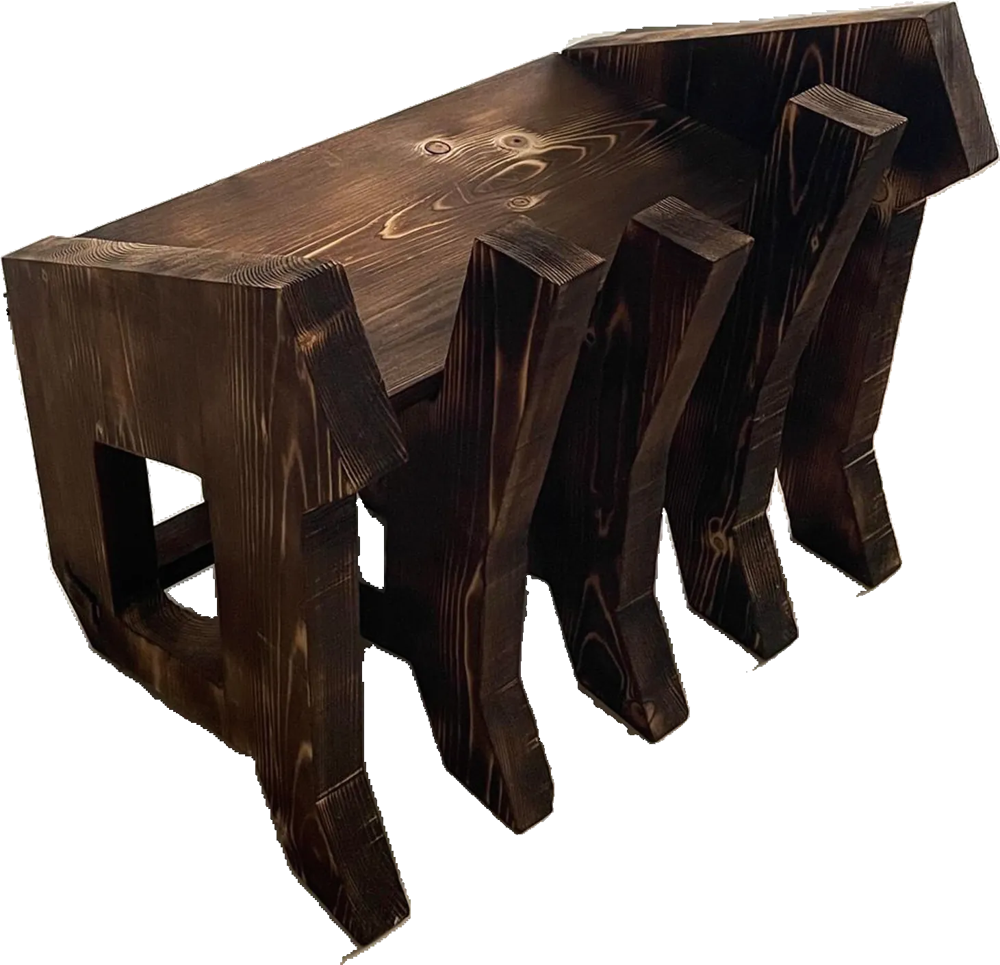
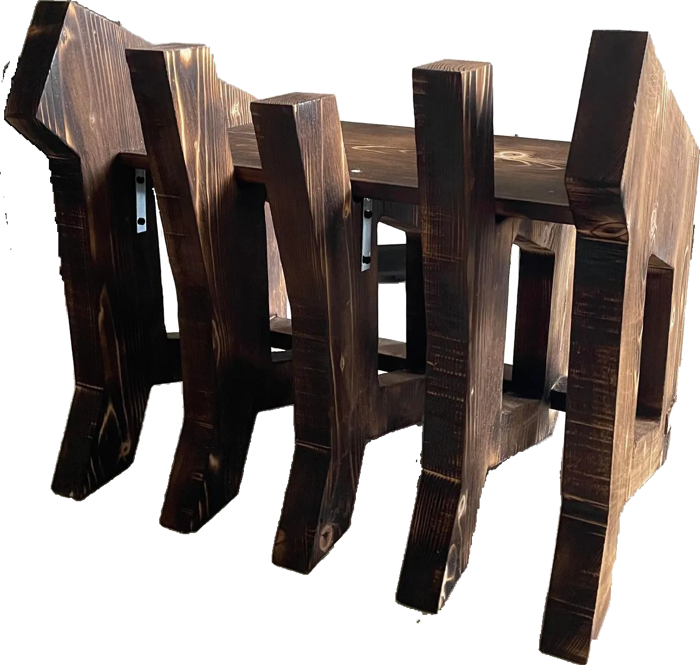
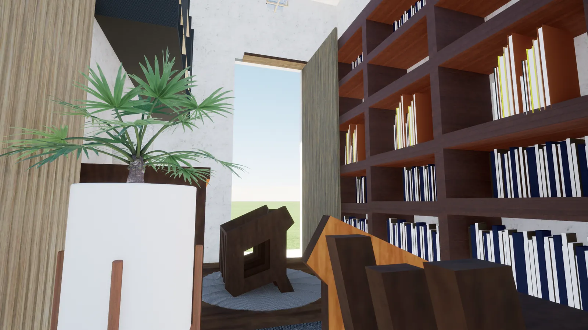
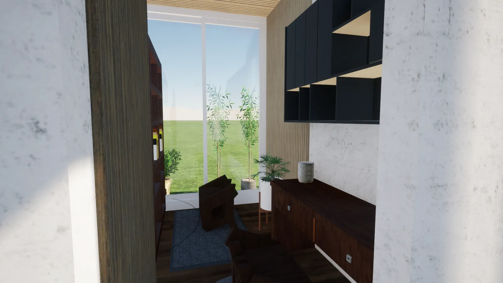
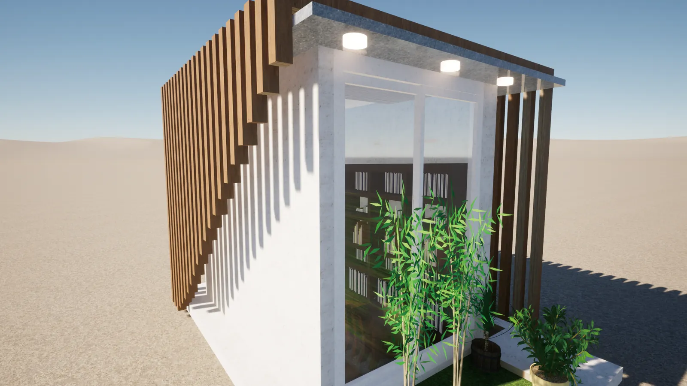

Product · Spatial
Wooden Stool 古董 antique
The theme is antique. The letter a in a classical Gothic face becomes the profile of each leg, stacked one behind the next to make the structure; along the back the boards rise and fall so the silhouette reads as a curve. 運用 antique(古董的)為主題,以古典的哥德字體 a 為主要設計, 並層層相疊為主結構,背面以高與低的方式呈現出曲線的感覺。
- Type
- Product design · Spatial design
- Setting
- Library reading room — 圖書館閱讀空間
- Drawings
- Floor plan, ceiling & lighting plan, interior and exterior elevations

Stool 椅凳
A stool moves easily. The long seat lets children sit and read side by side, and the height is right for standing on to reach books off the top of a shelf — which is why it was designed into a library. 因為是椅凳,搬動十分方便,加上長型的坐板可供小朋友坐在一起看書, 且椅凳的高度適合站上去取櫃子高處的書,所以將其設計在圖書館,供人坐著閱讀。


Library 圖書館
A quiet room to read in. Timber louvres run across the walls and ceiling with light strips tucked between them; a full-height window supplies the daylight. The furniture is mostly wood, and the stool stands on a rug. Planters and bamboo sit outside. 打造一個可以安靜閱讀的空間,透過木格柵為主要裝飾並加上燈條增加照明, 一旁的落地窗提供自然光線來源,室內有木頭為主的家具,以及置於舒適的地毯上方的椅子, 室外則種些盆栽、竹子點綴。

